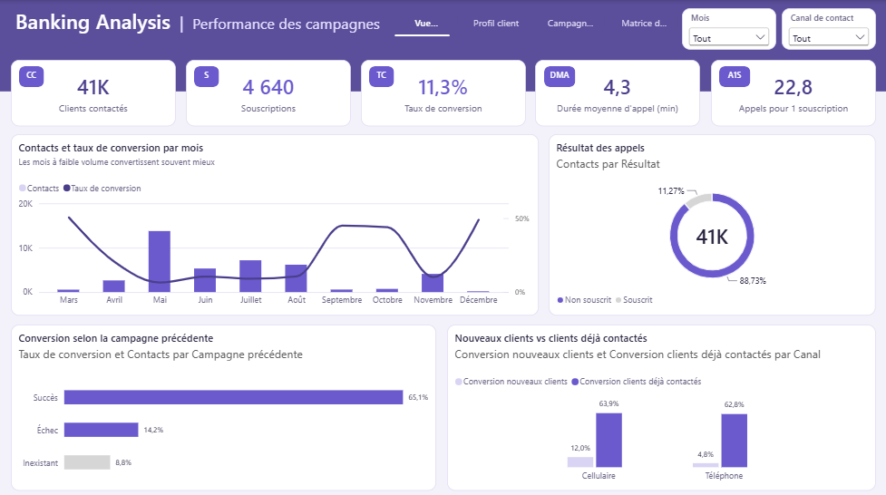

← Les 9 dashboards
07 / MARKETING BANCAIRE · DONNÉES PUBLIQUES UCI
Performance marketing d'une banque
Quels profils et quelles conditions de campagne sont associés à une meilleure souscription ?

Décision soutenuePrioriser les campagnes et les segments qui convertissent, limiter les relances inutiles.
Repère chiffré11,27 % DE CONVERSION
Rapport Power BI4 pages · 21 mesures DAX · format PBIP
Pages du rapport
- Vue d'ensemble
- Profil client
- Campagne & contexte
- Matrice de ciblage